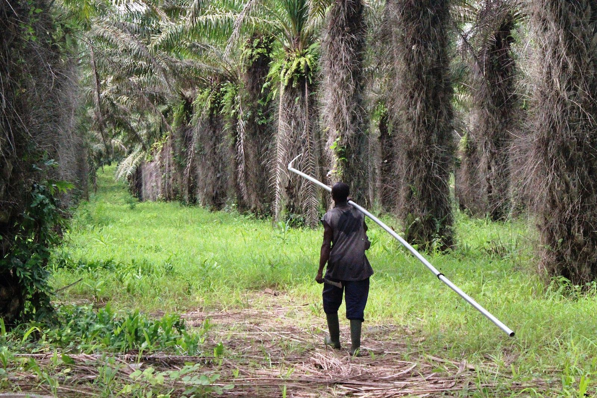

Promotionnelle · 3 min 49 · voix masculine
RSPO 2024 : votre palme prouvée
Standards 2024, deux promesses honnêtes (coopérative et acheteur au pont-bascule), 108 indicateurs ISH.
GEC-CI prépare les coopératives à la certification de groupe de petits producteurs indépendants (ISH 2024) et aide les acheteurs au pont-bascule à rester les fournisseurs préférés des moulins certifiés. Deux clients, deux promesses honnêtes.
Nous vendons un accès au marché des moulins exigeants, pas « un certificat RSPO » : pour l'acheteur, la valeur est la traçabilité ; pour la coopérative, c'est le groupe ISH.

Diagnostic, membres et GPS, contrôle interne, formation, audit blanc, accompagnement face à l'organisme certificateur.
Registre fournisseurs et GPS, pont-bascule vérifié, bons nominatifs, lots séparés, rapprochement.
Voix off française, musique, texte affiché à l'écran : à partager avec votre conseil d'administration et vos équipes. Toutes les vidéos GEC-CI PRO
Standards 2024, deux promesses honnêtes (coopérative et acheteur au pont-bascule), 108 indicateurs ISH.
Les textes en vigueur, l'éligibilité, les jalons A et B, le contrôle interne, le pont-bascule et le paiement par lot.

Sans moulin certifié ou acheteur de crédits, des membres certifiés ne vendent rien de plus.
Former ou auditer sur les anciens standards est désormais une erreur commerciale.
Sans tickets numérotés et balance vérifiée, la tonne livrée ne se rattache à aucun planteur.
Vendre une certification à un acheteur qui ne peut pas l'obtenir se retourne contre lui, et contre le cabinet.
La même méthode pour les trois filières ; seul le référentiel change.
66 indicateurs pour les membres et le gestionnaire du groupe (principes 1 à 4), plus 42 indicateurs de contrôle interne pour le seul gestionnaire. Reformulation GEC-CI ; la version anglaise RSPO fait foi.
Éligibilité : condition d'entrée dans le groupe · Jalon A : formations et pratiques de base · Jalon B : conformité complète. Une ligne peut regrouper plusieurs phases identiques.
Répondez honnêtement : rien n'est enregistré ni envoyé. Le résultat donne vos priorités ; il ne remplace pas le diagnostic sur place.

Registres incomplets, pas de responsable du système interne.

Organisation correcte, l'acheteur attend un premier audit.

Rainforest Alliance v1.4 ou RSPO 2024 : les écarts à combler.

Non-conformités majeures, certificat suspendu, conflit interne.

Cohérence des données entre sections, magasins et ponts-bascules.

Traçabilité, bilan massique, dossiers d'origine pour le règlement européen.
Personnages : illustrations créées pour GEC-CI, ils ne représentent pas des personnes réelles.
Personnages : illustrations créées pour GEC-CI, ils ne représentent pas des personnes réelles.
Le prix se calcule après le diagnostic, lot par lot. Jamais conditionné à l'obtention du certificat : la décision appartient à l'organisme certificateur, et une prime au succès pousserait à masquer des problèmes.
Vos données restent à vous : elles sont hébergées dans votre espace et vous sont restituées en fin de contrat.
Membres, parcelles, pont-bascule, achats, lots, balance massique, contrôle interne, non-conformités, tableau de bord RSPO.
Ouvrir la plateformeManuel complet : périmètre des deux modèles clients, diagnostic, 108 indicateurs ISH, contrôle interne, audit blanc, offre.
Lire le manuel9 politiques, 29 procédures, 55 formulaires, 32 registres et 10 plans, adaptés à votre groupe.
En parlerLe système de gestion du cabinet : clients, contrats, missions, preuves, validations humaines, incidents, facturation et journal d'audit. Un seul compte pour toutes les plateformes GEC-CI ; droits vérifiés par le serveur.
Ouvrir IA GECI
GEC-CI est dirigé par Mr SIDIBE ABDOULAYE, Président-Directeur Général, ATN RA et formateur-auditeur ISO 9001, 14001 et 45001. La direction suit chaque mission jusqu'à la décision écrite.


Portraits de bureau : décors mis en scène numériquement.
| Premier contact | Réponse le jour même, rendez-vous sous 7 jours |
| Diagnostic | Rapport sous 10 jours ouvrés après la visite |
| Vos questions | Réponse sous 48 heures ouvrées |
| Comité de pilotage | Chaque mois, compte rendu sous 5 jours ouvrés |
| Données transmises | Retour écrit sous 5 jours ouvrés |
| Audit blanc | Rapport sous 7 jours ouvrés |
Avec les 108 indicateurs ISH 2024. Vous repartez avec le bon périmètre et vos trois priorités.
+225 05 55 49 45 94WhatsApp+225 07 57 88 13 49